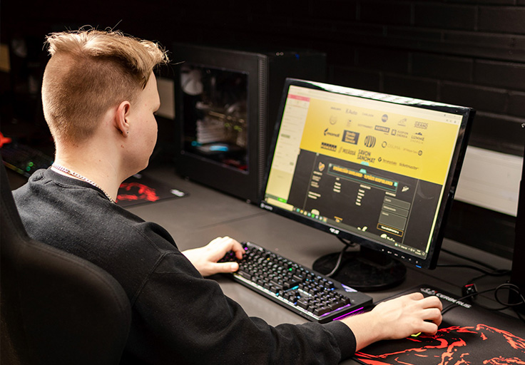

Tutkinnonosat
✶Tieto- ja viestintätekniikan perustehtävät, 25 osp
Koodi: 106413 Järjestysnumero: 1
Ammattitaitovaatimukset
Opiskelija toimii tieto- ja viestintätekniikan työtehtävissä
- toimii hyvällä palveluasenteella (1561)
- palvelee sisäisiä tai ulkoisia asiakkaita (1560)
- varmistaa asiakkaan tarpeen ja perustelee asiakkaalle ratkaisun (1559)
- pyytää palautetta omasta toiminnasta (1558)
- käyttää työpaikan viestintäkanavia ja ohjelmistoja (1557)
Opiskelija tekee tiedonhakua ja ratkaisee tieto- ja viestintätekniikan ongelmia
- käyttää alan perussanastoa ja tuntee uusia trendejä (1556)
- hyödyntää englanninkielistä materiaalia ongelmanratkaisussa (1555)
- ratkaisee ongelmia hakemalla tietoa (1554)
Opiskelija käyttää tietoteknistä ympäristöä
- käyttää työssä tarvittavia käyttöjärjestelmiä (1553)
- jakaa ja ottaa käyttöön verkkoyhteyden eri päätelaitteilla ottaen huomioon tietoturvan (1552)
- tuntee internetin ja koti- ja pienyrityksen verkon perusrakenteen (1551)
- hallitsee ja suojaa koti- ja pienyrityksen tietoliikenne- ja oheislaitteita (1550)
✶Ohjelmointi, 45 osp

Koodi: 106419 Järjestysnumero: 7
Ammattitaitovaatimukset
Opiskelija käyttää ohjelmistokehitysympäristöä
- käyttää ohjelmointieditoria tai kehitysympäristöä (1473)
- etsii ja korjaa virheitä ohjelmakoodista (1472)
- varmistaa asiakkaan tarpeen ja perustelee asiakkaalle ratkaisun (1559)
- testaa ohjelman toimintoja (1471)
Opiskelija ohjelmoi
- käyttää rakenteista ohjelmointia toteutuksissa (1470)
- kirjoittaa ylläpidettävää ohjelmakoodia (1469)
- tulkitsee suunnitelmia ja toteuttaa käyttöliittymän tai sen osia (1468)
- tulkitsee suunnitelmia ja toteuttaa ohjelmiston toimintoja (1467)
Opiskelija toimii ohjelmistokehitystiimin jäsenenä
- sopii tehtävistä tiimin muiden jäsenten kanssa (1466)
- etsii ratkaisuvaihtoehtoja ja ratkoo ongelmia yhdessä tiimin kanssa (1465)
- arvioi ratkaisujen toimivuuden yhdessä tiimin kanssa (1464)
- arvioi omaa toimintaa tiimin jäsenenä (1463)
✶Ohjelmistokehittäjänä toimiminen, 45 osp
Koodi: 106420 Järjestysnumero: 8
Ammattitaitovaatimukset
Opiskelija kommunikoi asiakkaan kanssa
- selvittää kehitystiimin kanssa asiakkaan tarpeet (1462)
- viestii tekniset asiat asiakaslähtöisesti (1461)
- osallistuu version katselmointiin (1460)
Opiskelija suunnittelee ohjelmiston toteutuksen
- asettaa kehitystiimin kanssa toteutettavat toiminnot tärkeysjärjestykseen (1459)
- jakaa kehitystiimin kanssa toteutettavat toiminnot tehtäviksi (1458)
- suunnittelee ja arvioi kehitystiimin kanssa tehtävien toteuttamista (1457)
Opiskelija kehittää ohjelmiston toimintalogiikkaa ja tietovarastoyhteyksiä
- kehittää ohjelmiston toimintalogiikkaa (1456)
- valitsee ohjelmistoon sopivan tietovaraston (1455)
- toteuttaa yhteyden tietovarastoon (1454)
- hyödyntää rajapintoja ja käsittelee tietoa (1453)
- arvioi ohjelmiston tietoturvaa (1452)
Opiskelija versioi ja julkaisee ohjelman
- käyttää versionhallintaa (1451)
- liittää ohjelman osan olemassa olevaan versioon (1450)
- julkaisee ohjelman tuotantoympäristöön (1449)
✶Verkkopalvelun tekninen toteuttaminen, 15 osp
Koodi: 106432 Järjestysnumero: 20
Ammattitaitovaatimukset
Opiskelija suunnittelee verkkopalvelun
- selvittää asiakkaan verkkopalvelun nykytilanteen ja tarpeet (1295)
- valitsee asiakkaan tarpeisiin sopivan teknisen ratkaisun verkkopalvelun toteuttamiseen (1294)
- varmistaa asiakkaan tarpeen ja perustelee asiakkaalle ratkaisun (1559)
- suunnitella verkkopalvelun, joka noudattaa asiakkaan graafista ohjeistusta (1293)
Opiskelija toteuttaa verkkopalvelun
- huomioi työssään verkkopalveluiden tietoturvan (1292)
- toteuttaa selaimen kautta päivitettävän verkkopalvelun (1291)
- tulkitsee suunnitelmia ja toteuttaa käyttöliittymän tai sen osia (1468)
- huomioi esteettömyyden ja käytettävyyden verkkopalvelun toteutuksessa (1290)
Opiskelija julkaisee verkkopalvelun
- julkaisee verkkopalvelun (1289)
- opastaa verkkopalvelun sisällöntuottajaa (1288)
- tukee asiakasta verkkopalveluun liittyvissä teknisissä ongelmissa (1287)